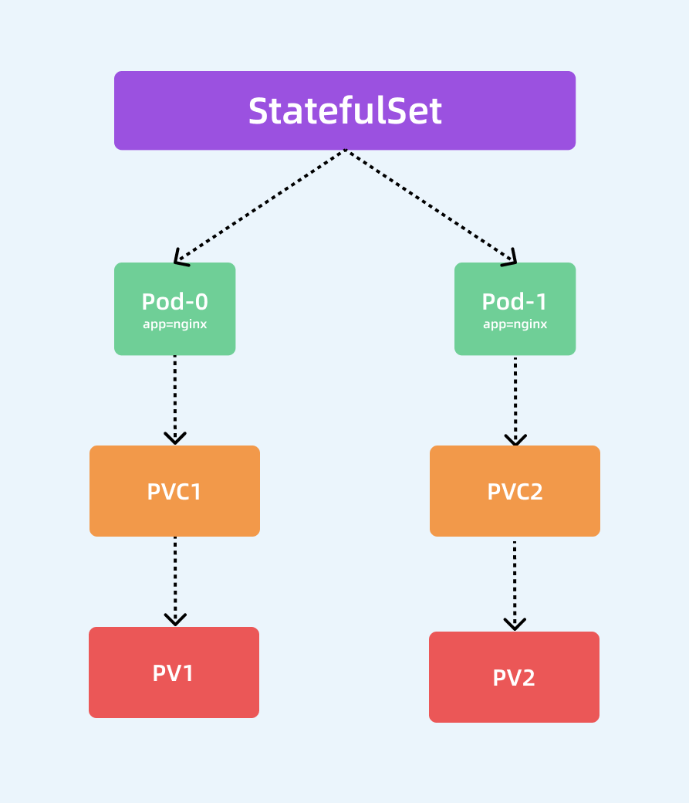

StatefulSet 控制器¶
前面我们学习了 Deployment 和 ReplicaSet 两种资源对象得使用，在实际使用的过程中，Deployment 并不能编排所有类型的应用，对无状态服务编排是非常容易的，但是对于有状态服务就无能为力了。我们需要先明白一个概念：什么是有状态服务，什么是无状态服务。
无状态服务（Stateless Service）：该服务运行的实例不会在本地存储需要持久化的数据，并且多个实例对于同一个请求响应的结果是完全一致的，比如前面我们讲解的 WordPress 实例，我们是不是可以同时启动多个实例，但是我们访问任意一个实例得到的结果都是一样的吧？因为他唯一需要持久化的数据是存储在MySQL数据库中的，所以我们可以说 WordPress 这个应用是无状态服务，但是 MySQL 数据库就不是了，因为他需要把数据持久化到本地。有状态服务（Stateful Service）：就和上面的概念是对立的了，该服务运行的实例需要在本地存储持久化数据，比如上面的 MySQL 数据库，你现在运行在节点 A，那么他的数据就存储在节点 A 上面的，如果这个时候你把该服务迁移到节点 B 去的话，那么就没有之前的数据了，因为他需要去对应的数据目录里面恢复数据，而此时没有任何数据。
现在对有状态和无状态有一定的认识了吧，比如我们常见的 WEB 应用，是通过 Session 来保持用户的登录状态的，如果我们将 Session 持久化到节点上，那么该应用就是一个有状态的服务了，因为我现在登录进来你把我的 Session 持久化到节点 A 上了，下次我登录的时候可能会将请求路由到节点 B 上去了，但是节点 B 上根本就没有我当前的 Session 数据，就会被认为是未登录状态了，这样就导致我前后两次请求得到的结果不一致了。所以一般为了横向扩展，我们都会把这类 WEB 应用改成无状态的服务，怎么改？将 Session 数据存入一个公共的地方，比如 Redis 里面，是不是就可以了，对于一些客户端请求 API 的情况，我们就不使用 Session 来保持用户状态，改成用 Token 也是可以的。
无状态服务利用我们前面的 Deployment 可以很好的进行编排，对应有状态服务，需要考虑的细节就要多很多了，容器化应用程序最困难的任务之一，就是设计有状态分布式组件的部署体系结构。由于无状态组件没有预定义的启动顺序、集群要求、点对点 TCP 连接、唯一的网络标识符、正常的启动和终止要求等，因此可以很容易地进行容器化。诸如数据库，大数据分析系统，分布式 key/value 存储、消息中间件需要有复杂的分布式体系结构，都可能会用到上述功能。为此，Kubernetes 引入了 StatefulSet 这种资源对象来支持这种复杂的需求。StatefulSet 类似于 ReplicaSet，但是它可以处理 Pod 的启动顺序，为保留每个 Pod 的状态设置唯一标识，具有以下几个功能特性：
- 稳定的、唯一的网络标识符
- 稳定的、持久化的存储
- 有序的、优雅的部署和缩放
- 有序的、优雅的删除和终止
- 有序的、自动滚动更新
Headless Service¶
在我们学习 StatefulSet 对象之前，我们还必须了解一个新的概念：Headless Service。Service 其实在之前我们和大家提到过，Service 是应用服务的抽象，通过 Labels 为应用提供负载均衡和服务发现，每个 Service 都会自动分配一个 cluster IP 和 DNS 名，在集群内部我们可以通过该地址或者通过 FDQN 的形式来访问服务。比如，一个 Deployment 有 3 个 Pod，那么我就可以定义一个 Service，有如下两种方式来访问这个 Service：
- cluster IP 的方式，比如：当我访问 10.109.169.155 这个 Service 的 IP 地址时，10.109.169.155 其实就是一个 VIP，它会把请求转发到该 Service 所代理的 Endpoints 列表中的某一个 Pod 上。具体原理我们会在后面的 Service 章节中和大家深入了解。
- Service 的 DNS 方式，比如我们访问
“mysvc.mynamespace.svc.cluster.local”这条 DNS 记录，就可以访问到 mynamespace 这个命名空间下面名为 mysvc 的 Service 所代理的某一个 Pod。
对于 DNS 这种方式实际上也有两种情况：
- 第一种就是普通的 Service，我们访问
“mysvc.mynamespace.svc.cluster.local”的时候是通过集群中的 DNS 服务解析到的 mysvc 这个 Service 的 cluster IP 的 - 第二种情况就是
Headless Service，对于这种情况，我们访问“mysvc.mynamespace.svc.cluster.local”的时候是直接解析到的 mysvc 代理的某一个具体的 Pod 的 IP 地址，中间少了 cluster IP 的转发，这就是二者的最大区别，Headless Service 不需要分配一个 VIP，而是可以直接以 DNS 的记录方式解析到后面的 Pod 的 IP 地址。
比如我们定义一个如下的 Headless Service：(headless-svc.yaml)
apiVersion: v1
kind: Service
metadata:
name: nginx
namespace: default
labels:
app: nginx
spec:
ports:
- name: http
port: 80
clusterIP: None
selector:
app: nginx实际上 Headless Service 在定义上和普通的 Service 几乎一致, 只是他的 clusterIP=None，所以，这个 Service 被创建后并不会被分配一个 cluster IP，而是会以 DNS 记录的方式暴露出它所代理的 Pod，而且还有一个非常重要的特性，对于 Headless Service 所代理的所有 Pod 的 IP 地址都会绑定一个如下所示的 DNS 记录：
<pod-name>.<svc-name>.<namespace>.svc.cluster.local这个 DNS 记录正是 Kubernetes 集群为 Pod 分配的一个唯一标识，只要我们知道 Pod 的名字，以及它对应的 Service 名字，就可以组装出这样一条 DNS 记录访问到 Pod 的 IP 地址，这个能力是非常重要的，接下来我们就来看下 StatefulSet 资源对象是如何结合 Headless Service 提供服务的。
StatefulSet¶
在开始之前，我们先准备两个 1G 的存储卷（PV），在后面的课程中我们也会和大家详细讲解 PV 和 PVC 的使用方法的，这里我们先不深究：（pv.yaml）
apiVersion: v1
kind: PersistentVolume
metadata:
name: pv001
spec:
capacity:
storage: 1Gi
accessModes:
- ReadWriteOnce
hostPath:
path: /tmp/pv001
---
apiVersion: v1
kind: PersistentVolume
metadata:
name: pv002
spec:
capacity:
storage: 1Gi
accessModes:
- ReadWriteOnce
hostPath:
path: /tmp/pv002然后直接创建 PV 即可：
$ kubectl apply -f pv.yaml
persistentvolume "pv001" created
persistentvolume "pv002" created
$ kubectl get pv
kubectl get pv
NAME CAPACITY ACCESS MODES RECLAIM POLICY STATUS CLAIM STORAGECLASS REASON AGE
pv001 1Gi RWO Recycle Available 12s
pv002 1Gi RWO Recycle Available 11s可以看到成功创建了两个 PV 对象，状态是：Available。
特性¶
然后接下来声明一个如下所示的 StatefulSet 资源清单：（nginx-sts.yaml）
apiVersion: apps/v1
kind: StatefulSet
metadata:
name: web
namespace: default
spec:
serviceName: "nginx"
replicas: 2
selector:
matchLabels:
app: nginx
template:
metadata:
labels:
app: nginx
spec:
containers:
- name: nginx
image: nginx:1.7.9
ports:
- name: web
containerPort: 80
volumeMounts:
- name: www
mountPath: /usr/share/nginx/html
volumeClaimTemplates:
- metadata:
name: www
spec:
accessModes: [ "ReadWriteOnce" ]
resources:
requests:
storage: 1Gi从上面的资源清单中可以看出和我们前面的 Deployment 基本上也是一致的，也是通过声明的 Pod 模板来创建 Pod 的，另外上面资源清单中和 volumeMounts 进行关联的不是 volumes 而是一个新的属性：volumeClaimTemplates，该属性会自动创建一个 PVC 对象，其实这里就是一个 PVC 的模板，和 Pod 模板类似，PVC 被创建后会自动去关联当前系统中和他合适的 PV 进行绑定。除此之外，还多了一个 serviceName: "nginx" 的字段，serviceName 就是管理当前 StatefulSet 的服务名称，该服务必须在 StatefulSet 之前存在，并且负责该集合的网络标识，Pod 会遵循以下格式获取 DNS/主机名：pod-specific-string.serviceName.default.svc.cluster.local，其中 pod-specific-string 由 StatefulSet 控制器管理。

StatefulSet 的拓扑结构和其他用于部署的资源对象其实比较类似，比较大的区别在于 StatefulSet 引入了 PV 和 PVC 对象来持久存储服务产生的状态，这样所有的服务虽然可以被杀掉或者重启，但是其中的数据由于 PV 的原因不会丢失。
注意
由于我们这里用volumeClaimTemplates声明的模板是挂载点的方式，并不是 volume，所有实际上上当于把 PV 的存储挂载到容器中，所以会覆盖掉容器中的数据，在容器启动完成后我们可以手动在 PV 的存储里面新建 index.html 文件来保证容器的正常访问，当然也可以进入到容器中去创建，这样更加方便：
$ for i in 0 1; do kubectl exec web-$i -- sh -c 'echo hello $(hostname) > /usr/share/nginx/html/index.html'; done现在我们优先创建上面定义的 Headless Service：
$ kubectl apply -f headless-svc.yaml
service/nginx created
$ kubectl get service nginx
NAME TYPE CLUSTER-IP EXTERNAL-IP PORT(S) AGE
nginx ClusterIP None <none> 80/TCP 9sHeadless Service 创建完成后就可以来创建对应的 StatefulSet 对象了：
$ kubectl apply -f nginx-sts.yaml
statefulset.apps/web created
$ kubectl get pvc
NAME STATUS VOLUME CAPACITY ACCESS MODES STORAGECLASS AGE
www-web-0 Bound pv001 1Gi RWO 10m
www-web-1 Bound pv002 1Gi RWO 6m26s可以看到这里通过 Volume 模板自动生成了两个 PVC 对象，也自动和 PV 进行了绑定。这个时候我们可以快速通过一个 --watch 参数来查看 Pod 的创建过程：
$ kubectl get pods -l app=nginx --watch
NAME READY STATUS RESTARTS AGE
web-0 0/1 ContainerCreating 0 1s
web-0 1/1 Running 0 2s
web-1 0/1 Pending 0 0s
web-1 0/1 Pending 0 0s
web-1 0/1 ContainerCreating 0 0s
web-1 1/1 Running 0 6s我们仔细观察整个过程出现了两个 Pod：web-0 和 web-1，而且这两个 Pod 是按照顺序进行创建的，web-0 启动起来后 web-1 才开始创建。如同上面 StatefulSet 概念中所提到的，StatefulSet 中的 Pod 拥有一个具有稳定的、独一无二的身份标志。这个标志基于 StatefulSet 控制器分配给每个 Pod 的唯一顺序索引。Pod 的名称的形式为<statefulset name>-<ordinal index>。我们这里的对象拥有两个副本，所以它创建了两个 Pod 名称分别为：web-0 和 web-1，我们可以使用 kubectl exec 命令进入到容器中查看它们的 hostname：
$ kubectl exec web-0 hostname
web-0
$ kubectl exec web-1 hostname
web-1顺序
StatefulSet 中 Pod 副本的创建会按照序列号升序处理，副本的更新和删除会按照序列号降序处理。
可以看到，这两个 Pod 的 hostname 与 Pod 名字是一致的，都被分配了对应的编号。我们随意查看一个 Pod 的描述信息：
$ kubectl describe pod web-0
Name: web-0
Namespace: default
Priority: 0
PriorityClassName: <none>
Node: ydzs-node3/10.151.30.57
Start Time: Sun, 17 Nov 2019 12:32:50 +0800
Labels: app=nginx
controller-revision-hash=web-6c5c7fd59b
statefulset.kubernetes.io/pod-name=web-0
Annotations: podpreset.admission.kubernetes.io/podpreset-time-preset: 2062768
Status: Running
IP: 10.244.3.98
Controlled By: StatefulSet/web
......我们可以看到Controlled By: StatefulSet/web，证明我们的 Pod 是直接受到 StatefulSet 控制器管理的。
现在我们创建一个 busybox（该镜像中有一系列的工具）的容器，在容器中用 DNS 的方式来访问一下这个 Headless Service，由于我们这里只是单纯的为了测试，所以没必要写资源清单文件来声明，用kubectl run命令启动一个测试的容器即可：
$ kubectl run -it --image busybox:1.28.3 test --restart=Never --rm /bin/sh
If you don't see a command prompt, try pressing enter.
/ #busybox 镜像
busybox 最新版本的镜像有 BUG，会出现nslookup提示无法解析的问题，我们这里使用老一点的镜像版本1.28.3即可。
如果对 kubectl run 命令的使用参数不清楚，我们可以使用 kubectl run --help 命令查看可使用的参数。我们这里使用 kubectl run 命令启动了一个以 busybox 为镜像的 Pod，--rm 参数意味着我们退出 Pod 后就会被删除，和之前的 docker run 命令用法基本一致，现在我们在这个 Pod 容器里面可以使用 nslookup 命令来尝试解析下上面我们创建的 Headless Service：
/ # nslookup nginx
Server: 10.96.0.10
Address 1: 10.96.0.10 kube-dns.kube-system.svc.cluster.local
Name: nginx
Address 1: 10.244.1.175 web-1.nginx.default.svc.cluster.local
Address 2: 10.244.4.83 web-0.nginx.default.svc.cluster.local
/ # ping nginx
PING nginx (10.244.1.175): 56 data bytes
64 bytes from 10.244.1.175: seq=0 ttl=62 time=1.076 ms
64 bytes from 10.244.1.175: seq=1 ttl=62 time=1.029 ms
64 bytes from 10.244.1.175: seq=2 ttl=62 time=1.075 ms我们直接解析 Headless Service 的名称，可以看到得到的是两个 Pod 的解析记录，但实际上如果我们通过nginx这个 DNS 去访问我们的服务的话，并不会随机或者轮询背后的两个 Pod，而是访问到一个固定的 Pod，所以不能代替普通的 Service。如果分别解析对应的 Pod 呢？
$ / # nslookup web-0.nginx
Server: 10.96.0.10
Address 1: 10.96.0.10 kube-dns.kube-system.svc.cluster.local
Name: web-0.nginx
Address 1: 10.244.4.83 web-0.nginx.default.svc.cluster.local
/ # nslookup web-1.nginx
Server: 10.96.0.10
Address 1: 10.96.0.10 kube-dns.kube-system.svc.cluster.local
Name: web-1.nginx
Address 1: 10.244.1.175 web-1.nginx.default.svc.cluster.local可以看到解析 web-0.nginx 的时候解析到了 web-0 这个 Pod 的 IP，web-1.nginx 解析到了 web-1 这个 Pod 的 IP，而且这个 DNS 地址还是稳定的，因为 Pod 名称就是固定的，比如我们这个时候去删掉 web-0 和 web-1 这两个 Pod：
$ kubectl delete pod -l app=nginx
pod "web-0" deleted
pod "web-1" deleted删除完成后才看 Pod 状态：
$ kubectl get pods -l app=nginx
NAME READY STATUS RESTARTS AGE
web-0 1/1 Running 0 42s
web-1 1/1 Running 0 39s可以看到 StatefulSet 控制器仍然会安装顺序创建出两个 Pod 副本出来，而且 Pod 的唯一标识依然没变，所以这两个 Pod 的网络标识还是固定的，我们依然可以通过web-0.nginx去访问到web-0这个 Pod，虽然 Pod 已经重建了，对应 Pod IP 已经变化了，但是访问这个 Pod 的地址依然没变，并且他们依然还是关联的之前的 PVC，数据并不会丢失：
/ # nslookup web-0.nginx
Server: 10.96.0.10
Address 1: 10.96.0.10 kube-dns.kube-system.svc.cluster.local
Name: web-0.nginx
Address 1: 10.244.3.98 web-0.nginx.default.svc.cluster.local
/ # nslookup web-1.nginx
Server: 10.96.0.10
Address 1: 10.96.0.10 kube-dns.kube-system.svc.cluster.local
Name: web-1.nginx
Address 1: 10.244.1.176 web-1.nginx.default.svc.cluster.local通过 Headless Service，StatefulSet 就保证了 Pod 网络标识的唯一稳定性，由于 Pod IP 并不是固定的，所以我们访问有状态应用实例的时候，就必须使用 DNS 记录的方式来访问了，所以很多同学偶尔有固定的 Pod IP 的需求，或许可以用这种方式来代替。
最后我们可以通过删除 StatefulSet 对象来删除所有的 Pod，仔细观察也会发现是按照倒序的方式进行删除的：
$ kubectl delete statefulsets web
statefulset.apps "web" deleted
$ kubectl get pods --watch
NAME READY STATUS RESTARTS AGE
web-1 1/1 Terminating 0 3h/31m
web-0 1/1 Terminating 0 3h/31m管理策略¶
对于某些分布式系统来说，StatefulSet 的顺序性保证是不必要和/或者不应该的，这些系统仅仅要求唯一性和身份标志。为了解决这个问题，我们只需要在声明 StatefulSet 的时候重新设置 spec.podManagementPolicy 的策略即可。
默认的管理策略是 OrderedReady，表示让 StatefulSet 控制器遵循上文演示的顺序性保证。除此之外，还可以设置为 Parallel 管理模式，表示让 StatefulSet 控制器并行的终止所有 Pod，在启动或终止另一个 Pod 前，不必等待这些 Pod 变成 Running 和 Ready 或者完全终止状态。
更新策略¶
前面课程中我们学习了 Deployment 的升级策略，在 StatefulSet 中同样也支持两种升级策略：onDelete 和 RollingUpdate，同样可以通过设置 .spec.updateStrategy.type 进行指定。
OnDelete: 该策略表示当更新了StatefulSet的模板后，只有手动删除旧的 Pod 才会创建新的 Pod。RollingUpdate：该策略表示当更新 StatefulSet 模板后会自动删除旧的 Pod 并创建新的Pod，如果更新发生了错误，这次“滚动更新”就会停止。不过需要注意 StatefulSet 的 Pod 在部署时是顺序从 0~n 的，而在滚动更新时，这些 Pod 则是按逆序的方式即 n~0 一次删除并创建。
另外SatefulSet 的滚动升级还支持 Partitions的特性，可以通过.spec.updateStrategy.rollingUpdate.partition 进行设置，在设置 partition 后，SatefulSet 的 Pod 中序号大于或等于 partition 的 Pod 会在 StatefulSet 的模板更新后进行滚动升级，而其余的 Pod 保持不变，这个功能是不是可以实现灰度发布？大家可以去手动验证下。
在实际的项目中，其实我们还是很少会去直接通过 StatefulSet 来部署我们的有状态服务的，除非你自己能够完全能够 hold 住，对于一些特定的服务，我们可能会使用更加高级的 Operator 来部署，比如 etcd-operator、prometheus-operator 等等，这些应用都能够很好的来管理有状态的服务，而不是单纯的使用一个 StatefulSet 来部署一个 Pod 就行，因为对于有状态的应用最重要的还是数据恢复、故障转移等等。